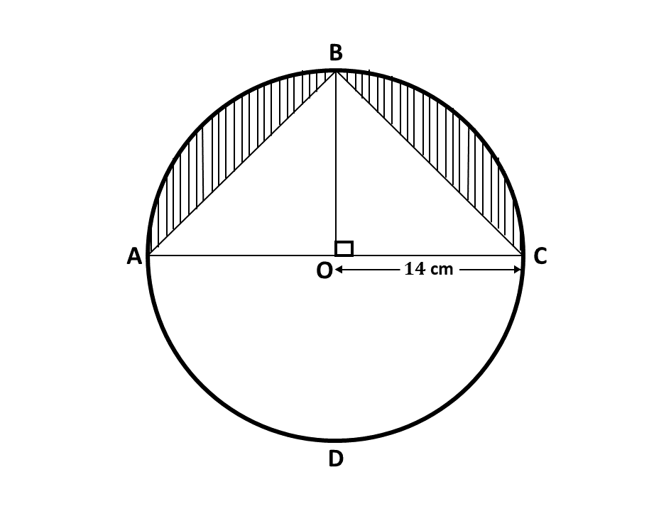
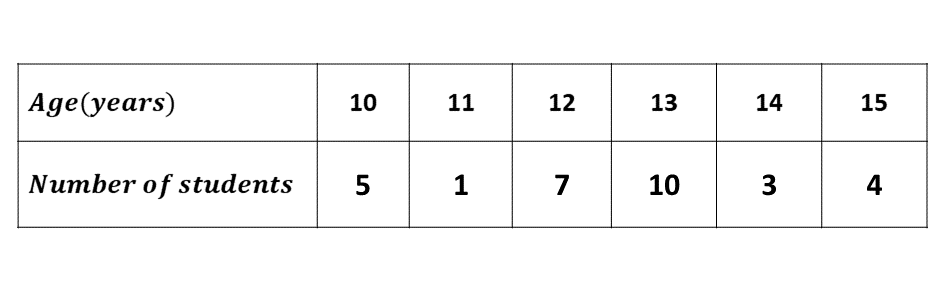
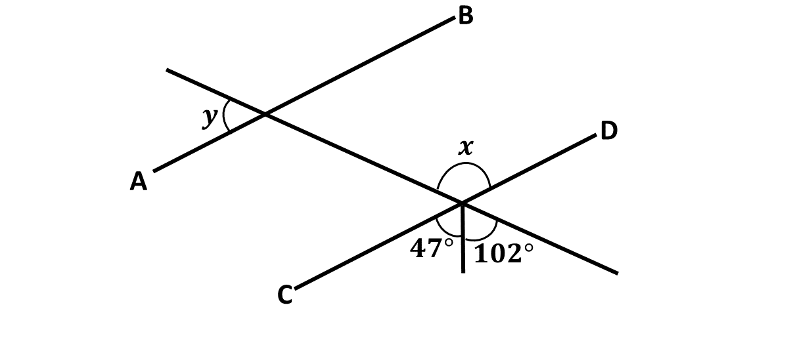

GUIDE (BECE - 2017)
You have 60 minutes for each section. Try to work on your speed as you prepare towards the final exam.
Good luck and remember to check your answers with the solutions provided. If you have any questions, feel free to ask your teacher or refer to the video lessons for more help.
Section A - Multiple Choice Questions
This section contains 40 multiple choice questions. You have 60 minutes to complete it.
Each question has four options labeled A to D. Select the correct answer for each question.
Section B
Question 1
-
In a class of 30 girls, 17 play football, 12 play hockey and 4 play both games.
\(\hspace{0.5cm} i)\) Draw a Venn diagram to illustrate the given information.
\(\hspace{0.5cm} ii)\) How many girls play:
\(\hspace{1cm} \alpha)\) one or two of the games?
\(\hspace{1cm} \beta)\) none of the games?
-
\( \)
In the diagram, \(ABCD\) is a circle of radius 14 cm and center \(O\). Line \(BO\) is perpendicular to line \(AC\). Calculate, the total area of the shaded portions.
\(\hspace{0.5cm}\) [Take \(\pi = \frac{22}{7}\)]
Question 2
-
Two consecutive odd numbers are such that seven times the smaller, subtracted from nine times the bigger, gives 144. Find the two numbers.
-
A paint manufacturing company has a machine which fills 24 tins with paint in 5 minutes.
\(\hspace{0.5cm} i)\) How many tins will the machine fill in
\(\hspace{1cm} \alpha)\) 1 minute, correct to the nearest whole number?
\(\hspace{1cm} \beta)\) 1 hour?
\(\hspace{0.5cm} ii)\) How many hours will it take to fill 1440 tins?
-
Given that \(s = \frac{n}{2}[2a + (n - 1)d]\), \(a = 3\), \(d = 4\) and \(n = 10\), find the value of \(s\).
Question 3
-
Using a ruler and a pair of compasses only, construct:
\(\hspace{0.5cm} i)\) a triangle \(ABC\) with \(|BC| = 9\) cm, \(|AC| = 8\) cm and \(|AB| = 6\) cm;
\(\hspace{0.5cm} ii)\) the perpendicular bisector of line \(BC\);
\(\hspace{0.5cm} iii)\) the bisector of angle \(ACB\).
-
Label the point of intersection of the two bisectors as \(Y\).
-
Draw a line to join \(B\) and \(Y\).
-
Measure:
\(\hspace{0.5cm} i)\) \(|BY|\);
\(\hspace{0.5cm} ii)\) \(|YC|\);
\(\hspace{0.5cm} iii)\) the base angles of triangle \(BYC\).
-
What type of triangle is \(BYC\)?
Question 4
-
The table below show the ages of students admitted in a hospital.
Use the information to answer the following questions:
\(\hspace{0.5cm} i)\) What is the modal age?
\(\hspace{0.5cm} ii)\) Calculate, correct to two decimal places, the mean age of the students.
-
Rice is sold at Gh₵56.00 per bag of 50 kg. A trader bought some bags of rice and paid Gh₵1,344.00.
\(\hspace{0.5cm} i)\) How many bags of rice did the trader buy?
\(\hspace{0.5cm} ii)\) If the trader retailed the bags of rice at Gh₵1.40 per kg, how much profit was made on 1 kg of rice?
Question 5
-
Using a scale of 2 cm to 1 unit on both axes, draw on a graph sheet two perpendicular axes \(Ox\) and \(Oy\) for \(-5 \leq x \leq 5\) and \(-5 \leq y \leq 5\)
\(\hspace{0.5cm} i)\) Plot, indicating the coordinates of all points \(A(2, 3)\) and \(B(-3, 4)\). Draw a line passing through the points \(A\) and \(B\).
\(\hspace{0.5cm} ii)\) Plot on the same graph sheet, indicating the coordinates of the points \(C(4, 2)\) and \(D(-2, -3)\). Draw a straight line passing through the points to meet line \(\overline{AB}\).
-
Using the graphs in \(5(a)\):
\(\hspace{0.5cm} i)\) find the values of \(y\) when \(x = -2\);
\(\hspace{0.5cm} ii)\) measure the angle between the lines \(AB\) and \(CD\).
Question 6
-
If \(\mathbf{m} = \begin{pmatrix} 2x + 1 \\ 2 - 3y\end{pmatrix}\), \(\mathbf{n} = \begin{pmatrix} 6 \\ -8\end{pmatrix}\) and \((\mathbf{m + n}) = \begin{pmatrix} 9 \\ -12\end{pmatrix}\), find the:
\(\hspace{0.5cm} i)\) values of \(x\) and \(y\);
\(\hspace{0.5cm} ii)\) components of \(\mathbf{m}\).
-
\(i)\)Solve the inequality:
\(\hspace{0.5cm}\) \(\frac{3}{4}(x + 1) + 1 \leq \frac{1}{2}(x - 2) + 5\)
\(\hspace{0.5cm} ii)\) Illustrate the answer in \(b(i)\) on a number line.
-
\(\)
In the diagram, \(\overline{AB}\) is parallel to \(\overline{CD}\).
Find the value of:
\(\hspace{0.5cm} i)\) \(x\);
\(\hspace{0.5cm} ii)\) \(y\).